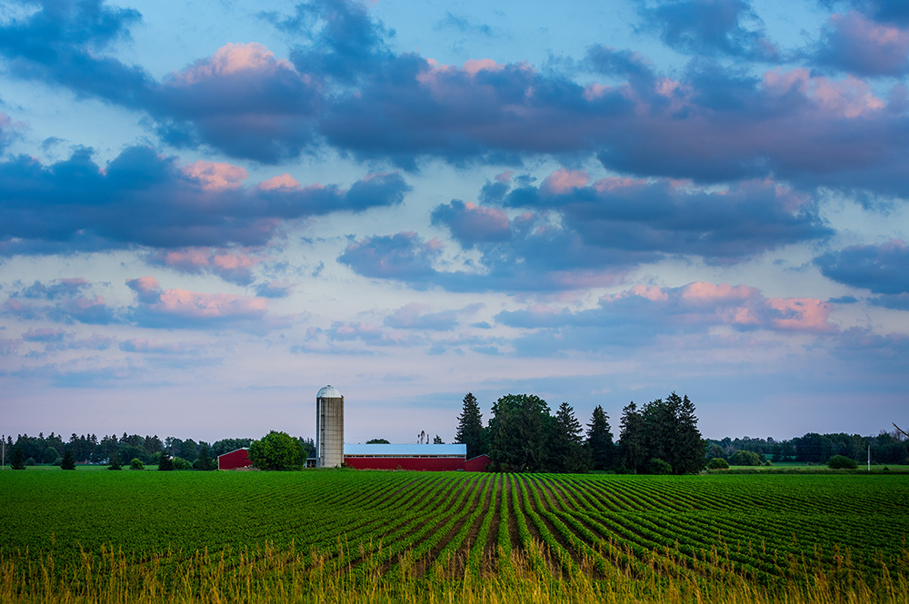
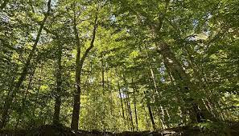

Day 3: Landform & Vegetation
Landform/Topographic Features:
- In a relatively lowland area shown by rolling hills and plains.
- The city isn't near major mountain ranges but has gentle slopes and valleys.
- The Thames River goes directly through the city which shapes some of its landscapes.
- Even though its not marshy the region has wetlands and small creeks.
- Agricultural fields stretch across the outskirts, marking the area's farming significance.
- London's vegetation comprises a mix influenced by the temperate climate.
- Deciduous trees like maple, oak, and birch are prevalent in the area.
- Grasslands and meadows dot the landscape, especially in rural outskirts.
- Agricultural crops such as corn, soybeans, and wheat thrive in the fertile soils.
- The moderate precipitation and temperature support diverse flora, allowing for a mix of forests, grassy areas, and cultivated farmlands.

